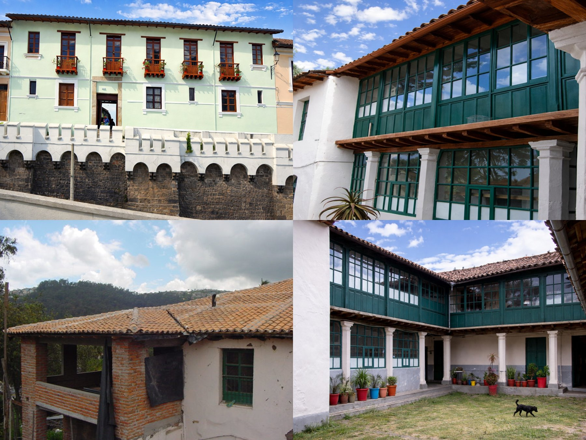
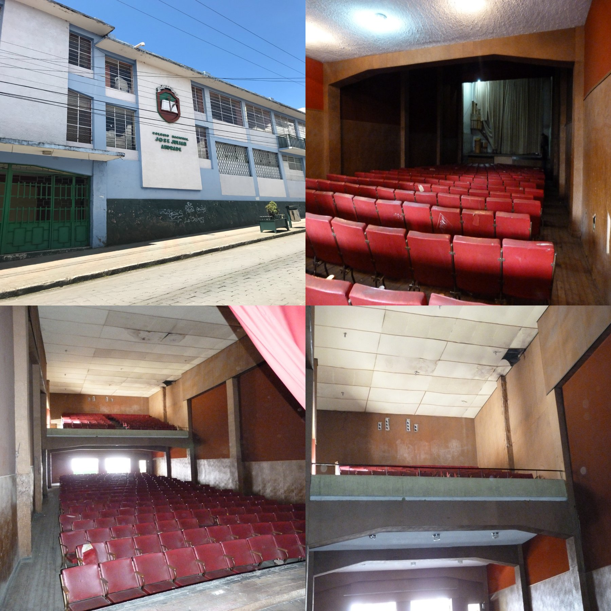
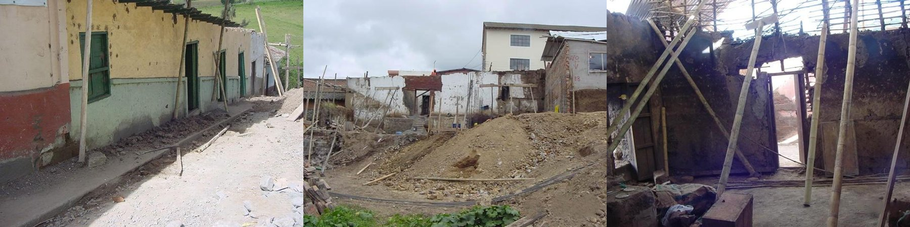

Proyectos Patrimoniales
Proyectos de rehabilitación y puesta en valor de activos históricos con enfoque técnico, cultural y arquitectónico.


Proyecto Recoleta
Año: 2022
Intervención en inmueble patrimonial ubicado en el centro histórico de Quito, adaptando el espacio a nuevas unidades habitacionales sin perder su valor histórico y arquitectónico.


Teatro Colegio José Julián Andrade
Año: 2018
Diseño arquitectónico para la rehabilitación de un teatro institucional, incorporando mejoras en acústica, iluminación y funcionalidad, respetando el carácter original del espacio.


Museo de las Artesanías
Año: 2015
Proyecto de rehabilitación patrimonial en el centro histórico de San Gabriel (Carchi). Se intervinieron aproximadamente 330 m², integrando patios y nuevas áreas funcionales, respetando técnicas tradicionales como tapial, adobe y bahareque.